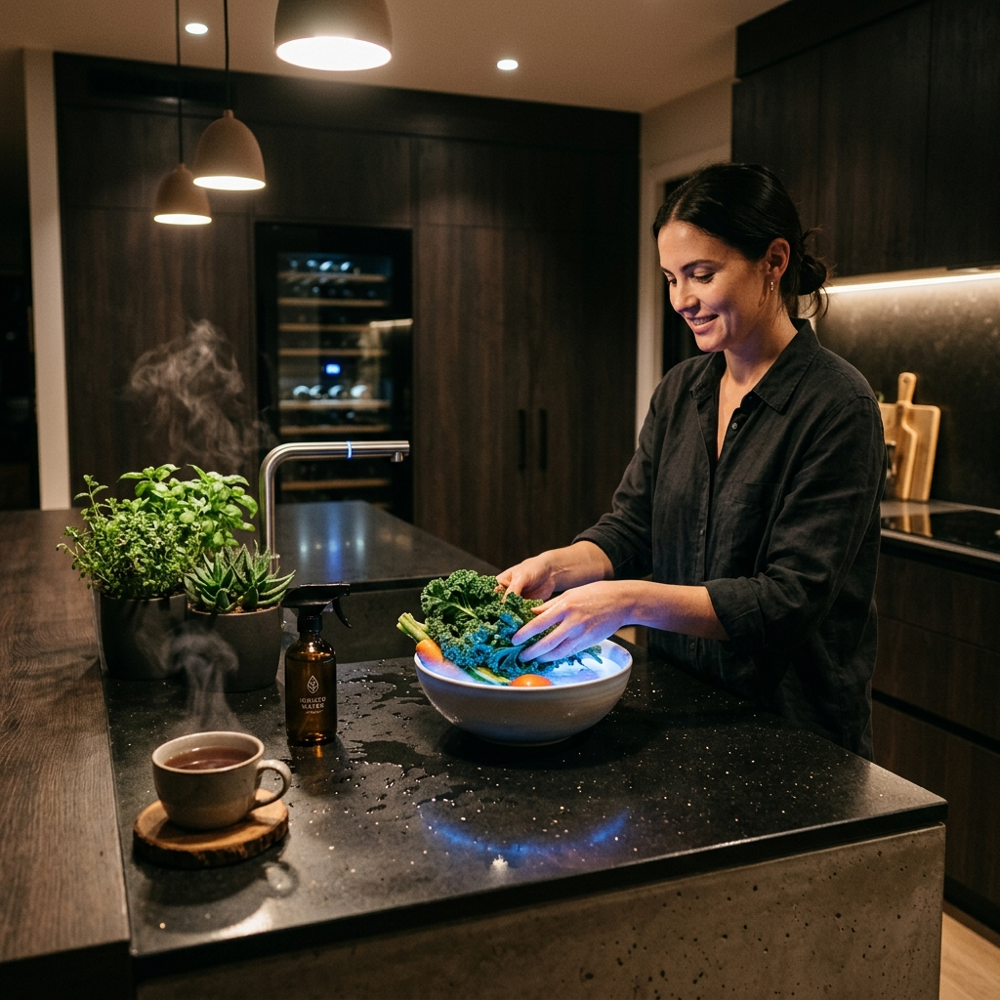
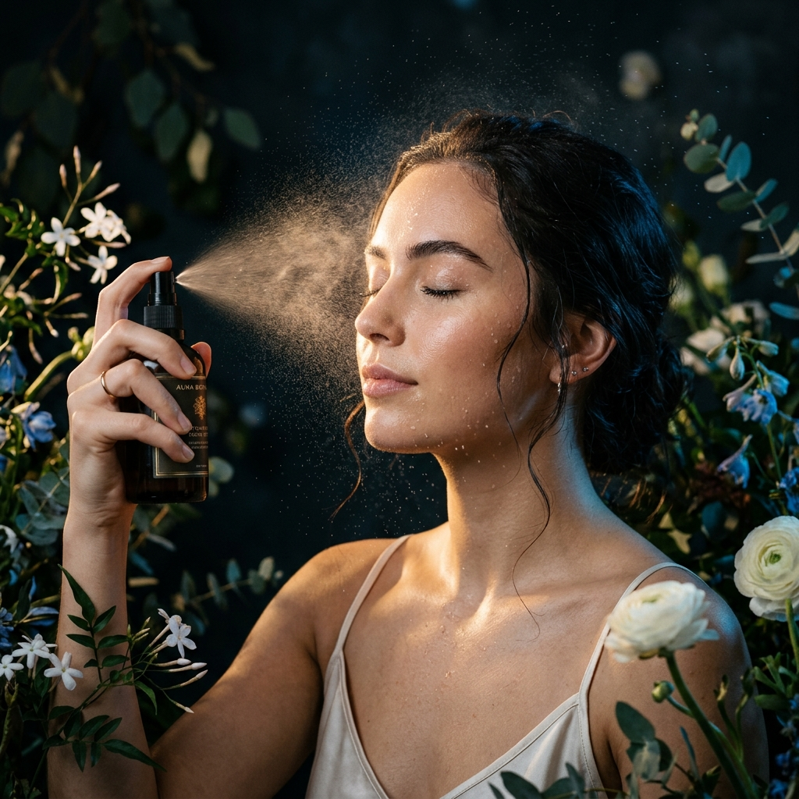

Protocolos detallados para aplicar cada tipo de agua en tu rutina diaria: salud, cocina, belleza, higiene y limpieza del hogar. Sustituye más de 30 productos químicos por un solo dispositivo.

La mayoría de las personas asocian el Agua Kangen con "agua para beber". Pero la realidad es mucho más amplia: los 5 tipos de agua producidos por los ionizadores Kangen reemplazan decenas de productos comerciales que usas a diario en la cocina, el baño, el tocador y la limpieza del hogar.
Cada protocolo está diseñado para que cualquier persona, sin conocimientos previos, pueda aplicar el tipo de agua correcto de la forma correcta. Es tan sencillo como pulsar un botón y seguir las instrucciones.
Protocolos de hidratación y bienestar para toda la familia. El agua alcalina ionizada como base de un estilo de vida saludable.
Cocina más saludable, más sabrosa y más limpia. Desde preparar tus verduras hasta hacer el café perfecto.
El agua de belleza a pH 6.0 está sintonizada con el manto ácido natural de la piel (pH 4.5-6.0). A diferencia de los tónicos comerciales que contienen alcohol, perfumes y conservantes, el agua Kangen de belleza es 100% natural, sin residuos y sin aditivos.
Estudios dermatológicos publicados en el International Journal of Cosmetic Science confirman que la hidratación con agua a pH ligeramente ácido mejora la retención de humedad epidérmica, la elasticidad cutánea y la defensa antimicrobiana de la piel.

El agua súper ácida a pH 2.5 es un potente desinfectante natural, bactericida y fungicida, con eficacia probada en entornos hospitalarios japoneses desde los años 90.
El agua súper alcalina disuelve grasas sin detergentes, limpia cristales sin dejar marcas y deshazte de productos químicos tóxicos para siempre.
Imprime esta tabla y pégala en tu nevera. Todo lo que necesitas saber de un vistazo.
| Uso | pH | Modo de Empleo | Frecuencia |
|---|---|---|---|
| Beber (diario) | pH 9.5 | 1.5-2L al día, primer vaso en ayunas | Diario |
| Café / Té | pH 9.5 | Calentar sin hervir en exceso | A gusto |
| Cocinar | pH 9.0-9.5 | Hervir pasta, arroz, sopas | A gusto |
| Medicamentos | pH 7.0 | Tomar pastillas solo con agua neutra | Cada toma |
| Tónico facial | pH 6.0 | Pulverizar rostro y cuello | 2x/día |
| Cabello | pH 6.0 | Último aclarado post-champú | Cada lavado |
| Enjuague bucal | pH 2.5 | Enjuagar 30-60s, escupir, aclarar 7.0 | 2x/día |
| Pie de atleta | pH 2.5 | Remojar pies 15-20 min | 2x/día |
| Lavar verduras | pH 11.5 | Remojar 10-15 min, aclarar con 8.5 | Cada compra |
| Desengrasante | pH 11.5 | Pulverizar, esperar 2-3 min, pasar paño | Según uso |
| Cristales | pH 11.5 | Pulverizar + paño microfibra | Semanal |
Cada uno de estos productos contiene químicos que contaminan tu hogar, tu cuerpo y el medio ambiente. Kangen los sustituye todos por agua pura.